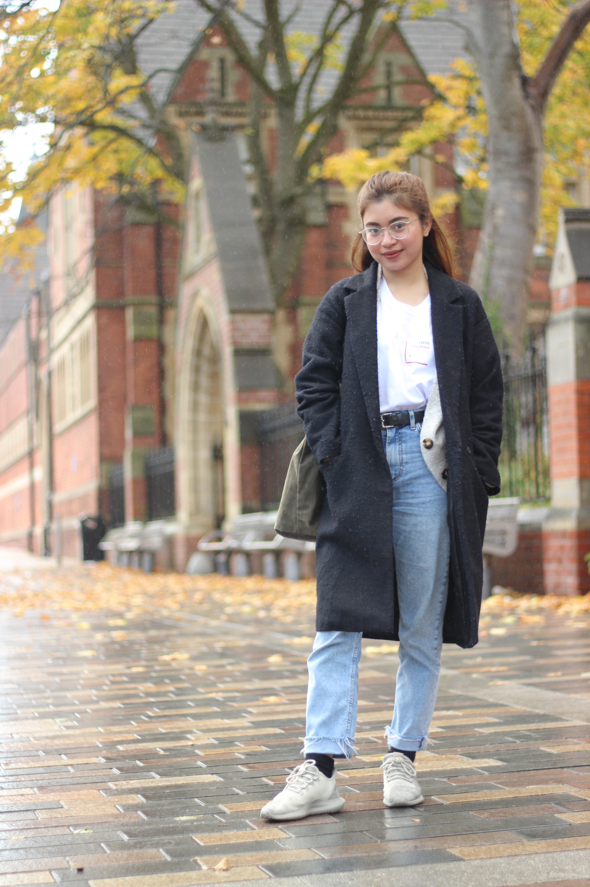
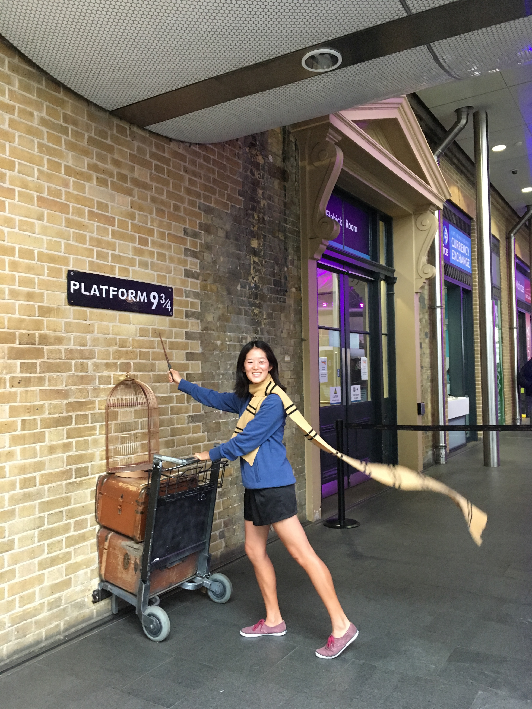

Airi is from Japan, pursuing her MA in Translation Studies at University of Leeds. She enjoys reading books and yoga on her spare time.

Nicole is a 2nd year student studying Communications and Media. She enjoys
listening to Kpop, learning new languages and cooking and eating Filipino food.

Kat is completing her MA in Translation Studies while trying to eat every kind
of biscuit sold at Tesco. Her favourite things are sundress weather, salted caramel
ice cream, and budget airfare.
 Iqra is a 2nd Year student studying BA Communication and Media. Born in Belgium,
she is glad to be free of Brexit worries and enjoys listening to K-Pop and Bollywood
music in her spare time.
Iqra is a 2nd Year student studying BA Communication and Media. Born in Belgium,
she is glad to be free of Brexit worries and enjoys listening to K-Pop and Bollywood
music in her spare time.